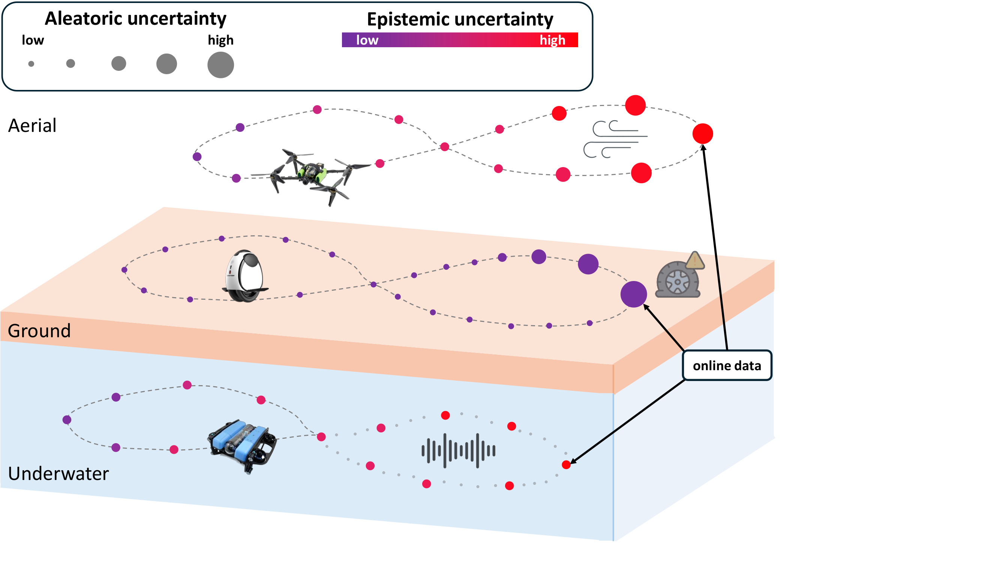
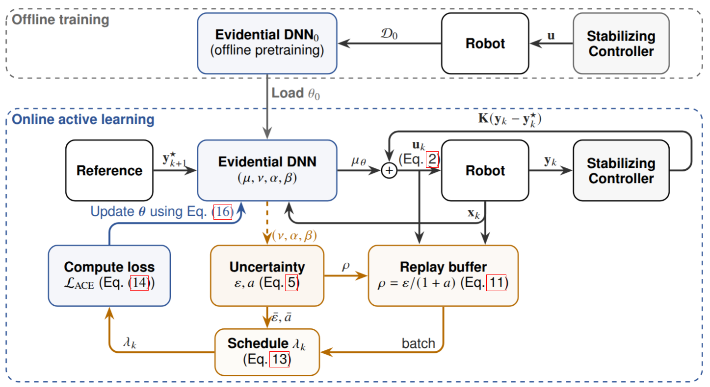
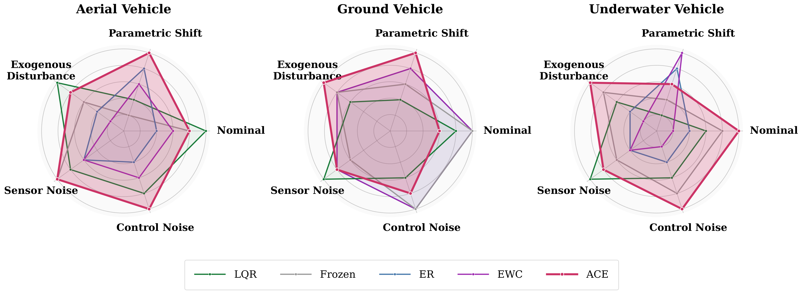
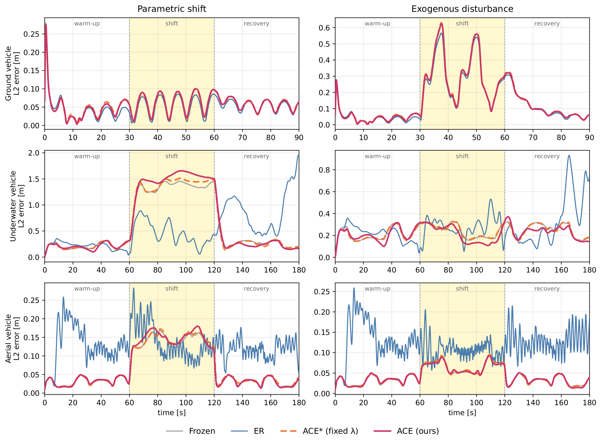

Persistent shift
Payload changes, friction, fluid drag, wind. Residuals are structured and reflect real changes in the system; the model should adapt.
adaptNeurIPS 2026 submission · Anonymous
TL;DR. We propose an uncertainty-aware continual-learning framework that enables stable online inverse-dynamics adaptation for mobile robots.
02 · The problem
Online learning is attractive in non-stationary environments but hazardous inside a closed-loop controller: structured changes in payload, friction, or drag should drive adaptation, while sensor and actuation noise should not. ACE separates the two by assigning epistemic and aleatoric uncertainty to different operational roles.

Payload changes, friction, fluid drag, wind. Residuals are structured and reflect real changes in the system; the model should adapt.
adaptSensor jitter, actuator noise, short-lived disturbances. Residuals are stochastic and uninformative; the model should hold the offline solution.
do not adaptUniform replay treats all recent samples as equally informative. Standard regularisation bounds drift but cannot distinguish the two regimes. A single predictive-uncertainty score conflates model ignorance with data noise, leading to opposing corrections in the two regimes.
conflated03 · Method
A Normal-Inverse-Gamma head returns epistemic (ε) and aleatoric (a) uncertainty in one forward pass. Epistemic uncertainty drives sample selection; aleatoric uncertainty gates updates.
The network maps the query $\mathbf{z}=(\mathbf{x},\mathbf{y}^\star)$ to NIG parameters $(\mu,\nu,\alpha,\beta)$ per output. The applied action is $\mu$. The same parameters give aleatoric and epistemic uncertainty:
$$ a=\frac{\beta}{\alpha-1},\qquad \varepsilon=\frac{\beta}{\nu(\alpha-1)} $$Each transition is buffered with priority
$$ \rho_k=\frac{\varepsilon_k}{1+a_k} $$High-epistemic novel transitions are kept; high-aleatoric noisy ones are pushed out.
The regulariser $\lambda$ tracks a saturating function of the running epistemic uncertainty $\bar{\varepsilon}_k$, projected onto an interval whose floor rises with the running aleatoric uncertainty $\bar{a}_k$:
$$ \lambda_{k+1}=\Pi_{\mathcal{I}_k}\!\Big[\lambda_k+\eta_\lambda\Big(\tfrac{\kappa}{\bar{\varepsilon}_k+\kappa}-\lambda_k\Big)\Big],\quad \mathcal{I}_k=\Big[\max\!\Big(\lambda_{\min},\,\tfrac{\bar{a}_k}{\bar{a}_k+\kappa}\Big),\,1\Big]. $$When noise dominates, the floor rises toward 1 and adaptation freezes.
The online loss adds the evidential regulariser and an $L_2$ anchor to the offline weights $\boldsymbol{\theta}_0$:
$$ \mathcal{L}=\mathcal{L}_{\mathrm{NIG}}+\lambda_0\lambda_k\,\mathcal{R}_{\mathrm{ev}}+\frac{\kappa_a}{2}\,\lVert\boldsymbol{\theta}-\boldsymbol{\theta}_0\rVert_2^{2} $$
04 · Results
All neural methods share the same offline checkpoint and the same feedback gain; differences arise only from the online update rule.
Best per cell bold, second-best underlined. Lower is better.
| Method | Ground | Underwater | Aerial | ||||||||||||
|---|---|---|---|---|---|---|---|---|---|---|---|---|---|---|---|
| Calib. | Param. | Exog. | Sens. | Ctrl. | Calib. | Param. | Exog. | Sens. | Ctrl. | Calib. | Param. | Exog. | Sens. | Ctrl. | |
| LQR | 0.047 | 0.166 | 0.746 | 0.048 | 0.061 | 0.241 | 1.720 | 0.252 | 0.240 | 0.242 | 0.031 | 0.138 | 0.058 | 0.033 | 0.031 |
| Frozen | 0.035 | 0.053 | 0.252 | 0.055 | 0.043 | 0.238 | 1.320 | 0.248 | 0.250 | 0.237 | 0.032 | 0.145 | 0.068 | 0.026 | 0.030 |
| ER | 0.035 | 0.052 | 0.252 | 0.054 | 0.043 | 0.225 | 0.485 | 0.282 | 0.316 | 0.284 | 0.146 | 0.121 | 0.131 | 0.160 | 0.166 |
| EWC | 0.035 | 0.052 | 0.252 | 0.054 | 0.043 | 0.224 | 0.480 | 0.277 | 0.315 | 0.289 | 0.142 | 0.122 | 0.131 | 0.160 | 0.161 |
| ACE* (fixed λ) | 0.048 | 0.053 | 0.099 | 0.054 | 0.069 | 0.230 | 1.319 | 0.240 | 0.250 | 0.222 | 0.032 | 0.121 | 0.067 | 0.026 | 0.030 |
| ACE (ours) | 0.049 | 0.051 | 0.100 | 0.054 | 0.065 | 0.231 | 0.980 | 0.236 | 0.250 | 0.230 | 0.032 | 0.105 | 0.063 | 0.026 | 0.030 |
Subscript std reflects the spread across conditions; the last column is the worst-cell error across the entire grid. Best per column bold, second-best underlined.
| Method | Ground | Underwater | Aerial | Worst cell |
|---|---|---|---|---|
| LQR | 0.214±0.270 | 0.539±0.591 | 0.058±0.041 | 1.720 |
| Frozen | 0.088±0.083 | 0.459±0.431 | 0.060±0.045 | 1.320 |
| ER | 0.087±0.083 | 0.318±0.089 | 0.145±0.017 | 0.485 |
| EWC | 0.087±0.083 | 0.317±0.087 | 0.143±0.016 | 0.480 |
| ACE* | 0.065±0.019 | 0.452±0.434 | 0.055±0.036 | 1.319 |
| ACE | 0.064±0.019 | 0.385±0.297 | 0.051±0.030 | 0.980† |
ACE has the lowest mean error on Ground and Aerial. ER and EWC average lowest on Underwater but drift on the Aerial noise cells. † ER and EWC reach a lower worst-cell number than ACE only because their worst cell is the underwater parametric shift.


Mean Euclidean position error during the recovery window, after the shift is removed. Lower is better. Best per row in bold, second-best in underline.
| Cell | Frozen | ER | ACE* | ACE |
|---|---|---|---|---|
| Underwater · mass shift | 0.251 | 0.764 | 0.240 | 0.242 |
| Underwater · disturbance | 0.247 | 0.446 | 0.214 | 0.214 |
| Aerial · mass shift | 0.031 | 0.118 | 0.042 | 0.042 |
| Aerial · disturbance | 0.031 | 0.142 | 0.031 | 0.031 |
Frozen does not adapt, so it serves as the lower bound. ACE returns close to Frozen after the shift; ER stays elevated.
05 · Live behaviour